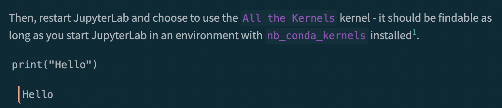

Since I work with both R and Python a lot, it would be useful to be able to use both languages in the same notebook. I don’t really care about being able to pass data between them, just being able to display multiple languages together - I can always save and load data as a csv (or other format). However, passing data between them is a bonus.
I considered making a Jupyter kernel to do this myself, but it seems like I’d need a decent amount of knowledge to be able to take that step - even though all I want to do is multiplex kernels.
My ideal setup is something like: * Add a cell tag to specify the kernel * Syntax highlighting and code running work in JupyterLab - As a bonus, both should work in JupyterLab Desktop * They should be compatible with Quarto * Allows side-by-side code blocks
Multikernel (Failed)
False Start: Trying to install a multikernel package
After some searching, I’ve come across two solutions: 1) JupyterLab-SOS - This is cool but is way too ambitious a project - I’ve used it before but the syntax highlighting often broke 2) allthekernels - Just multiplexing
Then, restart JupyterLab and choose to use the All the Kernels kernel - it should be findable as long as you start JupyterLab in an environment with nb_conda_kernels installed1.
Unfortunately, it doesn’t seem to have syntax highlighting or work well with Quarto:

Figure 1
And I wasn’t able to get it to actually multiplex either, so I decided to try JupyterLab-SOS.
You’ll know its installed when the following or similar shows up in the output to running jupyter kernelspec list in your shell:
sos /Users/baileyandrew/mambaforge/envs/JSOS/share/jupyter/kernels/sos
I started getting this error:
ImportError: cannot import name 'Sized' from 'collections' (/Users/baileyandrew/mambaforge/envs/JSOS/lib/python3.10/collections/__init__.py)
So I figured it was some version incompatibility with Python 3.10 and thus downgraded to 3.9:
mamba install conda-forge::python==3.9
print("Hello", "World")
Failed to switch to subkernel SoS [conda env:JSOS] (kernel None, language None): No subkernel named SoS [conda env:JSOS] is found. Please make sure that you have the kernel installed (listed in the output of "jupyter kernelspec list" and usable in jupyter by itself), install appropriate language module (e.g. "pip install sos-r"), restart jupyter notebook and try again.
However, as you can see, it didn’t work at all.
This is the problem with SoS Notebook; it’s too brittle because it tries to do too much!
Side-by-Side Code Cells
While the multikernel stuff isn’t working out yet, it is possible to use Quarto to get code cells side-by-side!
Then I can get the document to auto-run code cells (with a bit of fiddling - I only got it to work with my env’s default kernel rather than others, although I think there’s ways to fix that). However, it won’t auto-run the code-in-markdown cells.
It’s a bit annoying because, in theory at least (I haven’t tried it), multilingual support is available if I were to write in qmd instead of ipynb - it frustrates me that this isn’t a higher priority of the community :/
Cheating a bit
I can get halfway to being a polyglot as follows:
Python
R
print(["Hello", "World"])
['Hello', 'World']
print(c("Hello", "World"))
[1] "Hello" "World"
So, how did I do it? Well, it looks a bit ulgy in JupyterLab:
To do this, I had to have my Python kernel be from an environment that had access to an R distribution; unfortunately that’s something I want to move away from2.
Concluding Remarks
After making this blog post, I’ve begun to feel that two needs aren’t currently being met by Jupyter infrastructure:
Multikernels
Pretty rendering of code blocks surrounded by html
The first is something I could potentially fix, by writing my own kernel. The second could be fixed with an update to nbformat3 to allow for “nested cells”, i.e. allowing for the rendering of groups of cells at once, so that we don’t have to see the ugly mish-mosh of Figure 2. I’d like to be able to do something about that one day.
Footnotes
Alternatively, starting JupyterLab in Multi-Kernel should probably work, but you’d likely have to install JupyterLab there first.↩︎
I want to instead have every environment be precisely one language, since I think having multiple is what is preventing me from installing Bioconductor packages with conda↩︎